| Nombre | Posición | Edad | Biografía | Portada |
|---|---|---|---|---|
| Alexander González | Lateral derecho | 32 |
Alexander González es un lateral derecho venezolano con amplia trayectoria internacional. Ha jugado en clubes de Suiza, España y Brasil. Es reconocido por su solidez defensiva y capacidad para sumarse al ataque. |
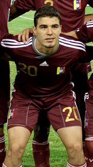 |
| Cristian Cásseres Jr. | Mediocampista | 25 |
Cristian Cásseres Jr. juega como mediocampista y ha destacado en la MLS y la Bundesliga. Es uno de los talentos jóvenes más prometedores de Venezuela, aportando energía, precisión y buena visión de juego. |
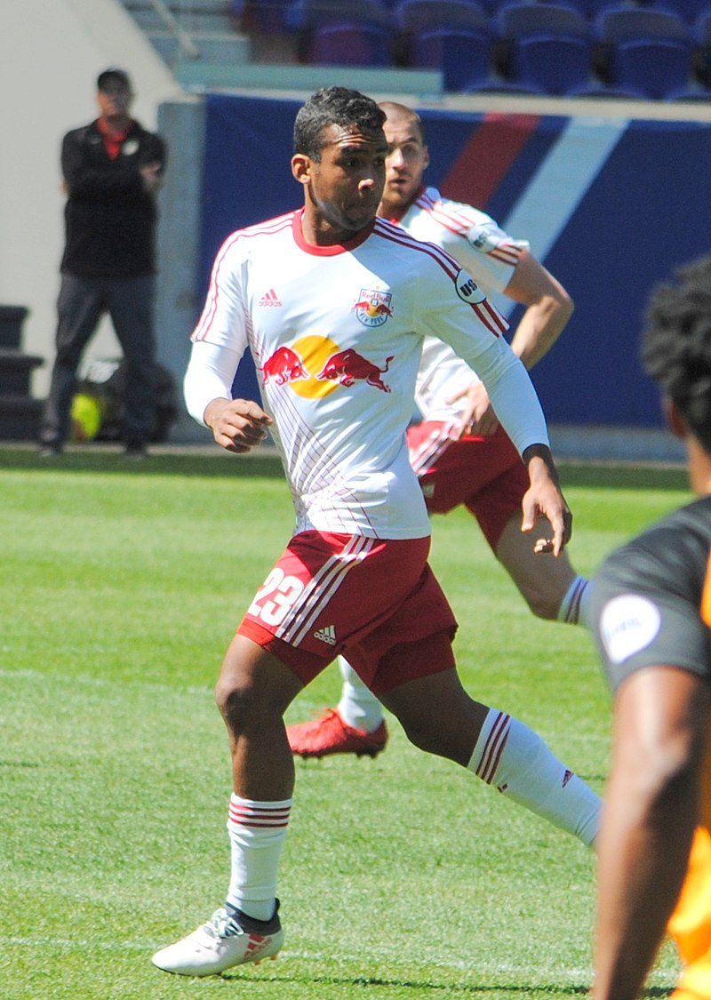 |
| Josef Martínez | Delantero | 32 |
Josef Martínez, ex goleador del Atlanta United en la MLS, es uno de los delanteros venezolanos más reconocidos de la última década. Destaca por su capacidad goleadora y velocidad en el área rival. |
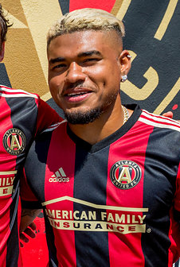 |
| Jhon Murillo | Extremo derecho | 30 |
Jhon Murillo es un veloz extremo que ha jugado en Portugal y México. Aporta desequilibrio y desborde por las bandas, siendo un recurso clave para el ataque vinotinto. |
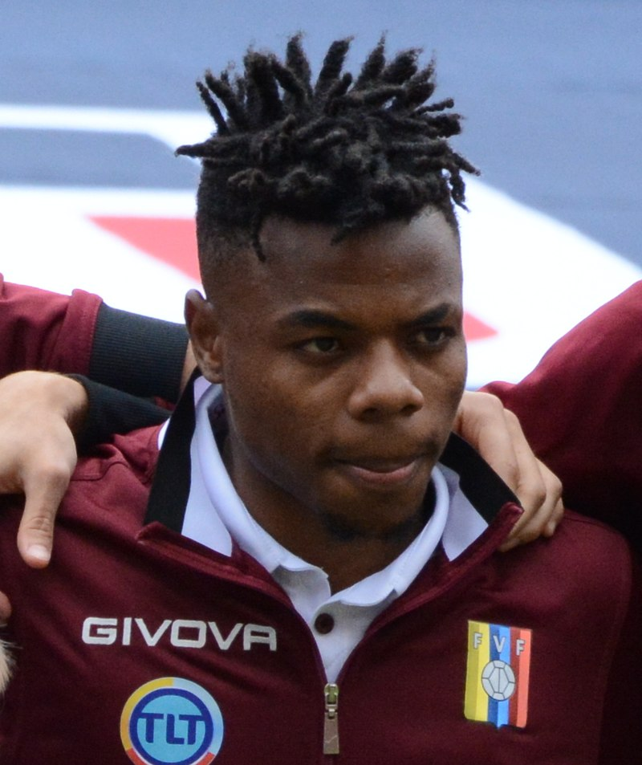 |
| Nahuel Ferraresi | Defensa central | 26 |
Nahuel Ferraresi es un defensa central con gran presencia física. Formado en Uruguay, ha jugado en Argentina, Portugal y Brasil. Es una pieza clave en la defensa venezolana. |
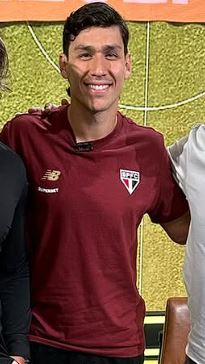 |
| Rafael Romo | Arquero | 35 |
Rafael Romo ha sido un arquero constante en las convocatorias de la selección venezolana. Con paso por clubes en Europa y América, aporta experiencia y seguridad en el arco. |
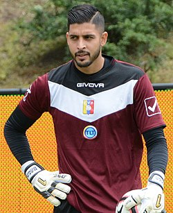 |
| Ronald Hernández | Lateral derecho | 27 |
Ronald Hernández es un lateral con proyección ofensiva. Ha jugado en Noruega, Escocia y la MLS. Destaca por su velocidad, técnica y compromiso defensivo. |
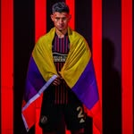 |
| Salomón Rondón | Delantero centro | 36 |
Salomón Rondón es el máximo goleador histórico de la selección venezolana. Con una extensa carrera en Europa, Asia y Sudamérica, sigue siendo el gran referente ofensivo de la Vinotinto. |
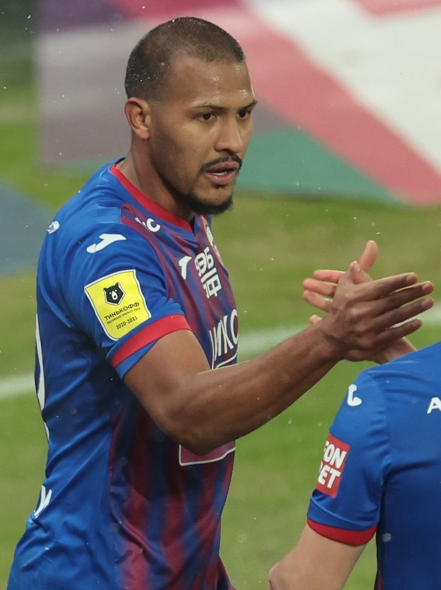 |
| Yeferson Soteldo | Mediocampista ofensivo | 28 |
Yeferson Soteldo es un talentoso mediocampista ofensivo con gran técnica y capacidad de desequilibrio. Ha brillado en clubes de Brasil, México y la MLS. Es una figura destacada en el equipo nacional. |
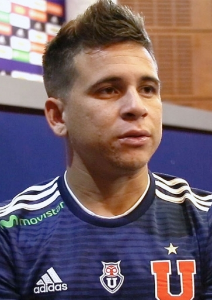 |
| Tomás Rincón | Mediocampista defensivo | 37 |
Tomás Rincón ha sido capitán de la Vinotinto por años. Con gran experiencia en el fútbol italiano, es líder dentro y fuera del campo, reconocido por su garra y carácter. |
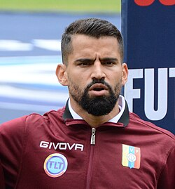 |
| Miguel Navarro | Lateral izquierdo | 26 |
Miguel Navarro juega en la MLS y se ha consolidado como lateral izquierdo. Aporta velocidad y capacidad de recuperación por la banda, siendo opción importante en el once titular. |
|
| Telasco Segovia | Mediocampista | 22 |
Telasco Segovia es una de las jóvenes promesas del fútbol venezolano. Su talento y madurez lo proyectan como una futura figura en el mediocampo vinotinto. |
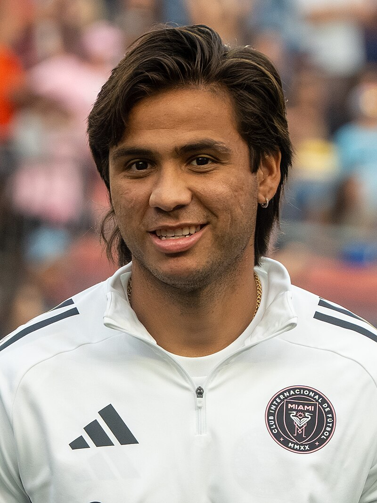 |